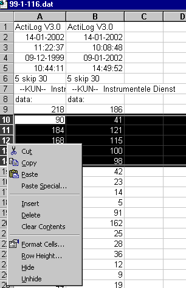
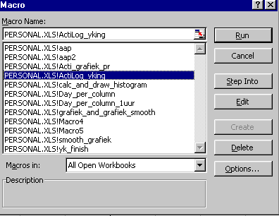
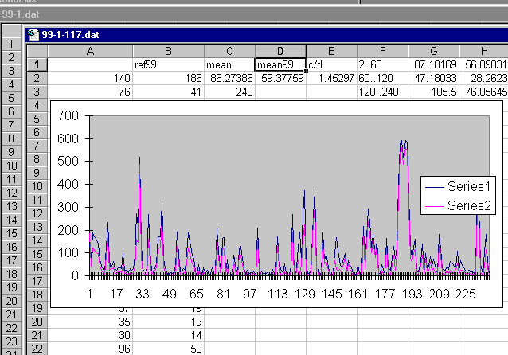
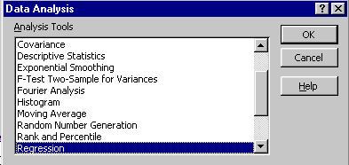
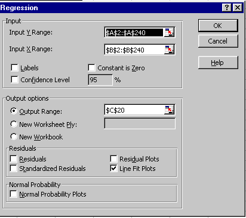
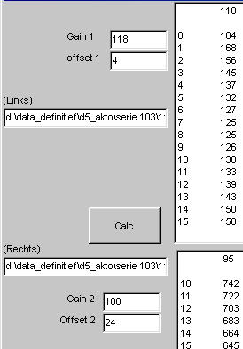

| Overzicht MidOrg |
|
|
| Model |

Akto meter ongeveer een dag in een bepaalde positie dragen.
Alle posities moeten worden getest: links / rechts en sensor onder
/ boven.
Eerst via MID een nummer toekennen aan de aktometer.
Vervolgens snel wissen (geheugen wordt niet gewist, alleen de teller
!!) en battery uitnemen.
Als alle aktometers die gelijktijdig worden gedragen, zo snel mogelijk de batterij in alle aktometers doen, zodat ze gelijk lopen.
Nadat de aktometer in een bepaalde positie gedragen is:(ongveer 1 dag
met liefst enkele actieve perioden van ongeveer een half uur)
aktometer uitlezen en bestand opslaan.
Inlezen in Excel gaat heel eenvoudig, er mag direct op "finish" worden
gedrukt omdat het formaat herkend wordt door Excel.
| Kopieer in de tweede kolom de meetwaarden van de gebruikte referentie.
Verwijder tussenliggende stukken met geen signaal
Selecteer de te verwijderen rijen,
VUL OP CEL C10 het aantal relevante regels (eindregel-10, vanwege de header). Nukan de makro gestrt worden die de grafiek tekent en een aantal basale gegevens berekent, |
 |
| De macros zijn opgeborgen in "personal.xls".
Dit bestand moet dus geopend worden voordat de macros beschikbaar gebruikt kunnen worden. Tools / Macro / Macros... Selecteer Actilog_yking Druk op RUN |
 |
| Hier de gegevens en de grafiek zoals hij door de makro wordt getekend. |  |
| Tools / Data Analysis / Regression ...
 invullen zoals hiernaast aangegeven,
|
 |
Opbergen als tab-delimited file met de extensie TXT
Opbergen als XLS file
| Op basis van de Excel grafieken wordt gekozen of onder danwel boven
de meest lineaire overeenkomst heeft.
Vervolgens worden van de gekozen draagwijze (onder/boven) de linker en rechter opname in het programma compare (zie hiernaast) toegevoegd, welke de ykfactoren berekent. |
 |